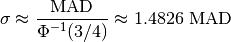
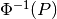
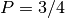

mad_std¶
-
astropy.stats.mad_std(data, axis=None, func=None, ignore_nan=False)[source] [edit on github]¶ Calculate a robust standard deviation using the median absolute deviation (MAD).
The standard deviation estimator is given by:

where  is the normal inverse cumulative distribution function evaluated at probability .
Parameters: data : array-like
Data array or object that can be converted to an array.
axis : {int, sequence of int, None}, optional
Axis along which the robust standard deviations are computed. The default (
None) is to compute the robust standard deviation of the flattened array.func : callable, optional
The function used to compute the median. Defaults to
numpy.ma.medianfor masked arrays, otherwise tonumpy.median.ignore_nan : bool
Ignore NaN values (treat them as if they are not in the array) when computing the median. This will use
numpy.ma.medianifaxisis specified, ornumpy.nanmedianifaxis=Noneand numpy’s version is >1.10 because nanmedian is slightly faster in this case.Returns: mad_std : float or
ndarrayExamples
>>> import numpy as np >>> from astropy.stats import mad_std >>> rand = np.random.RandomState(12345) >>> madstd = mad_std(rand.normal(5, 2, (100, 100))) >>> print(madstd) 2.0232764659422626